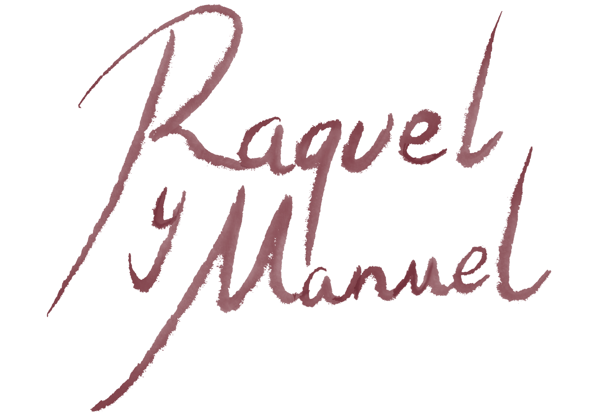
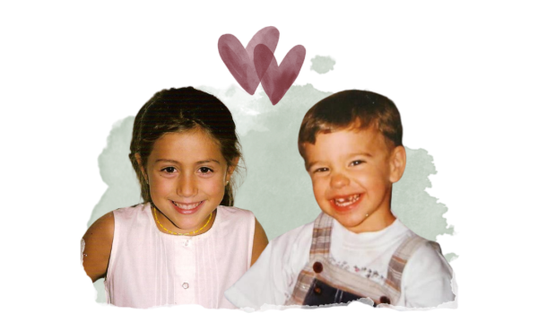
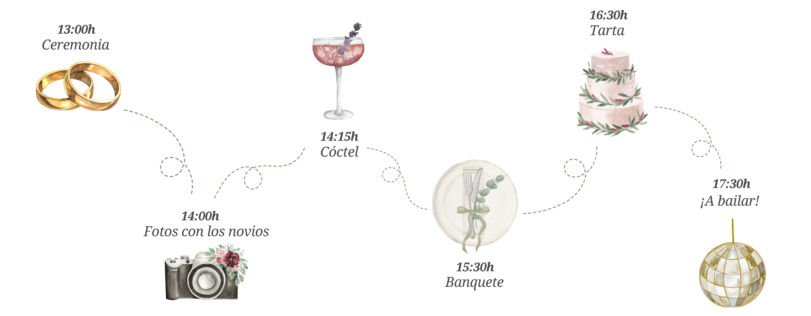
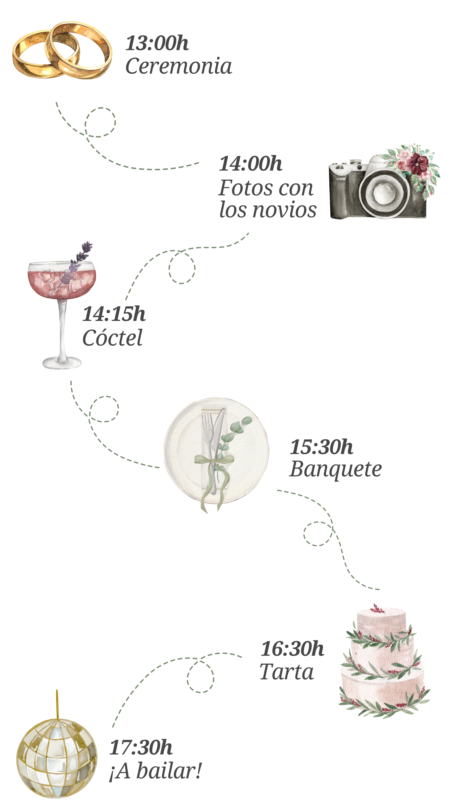
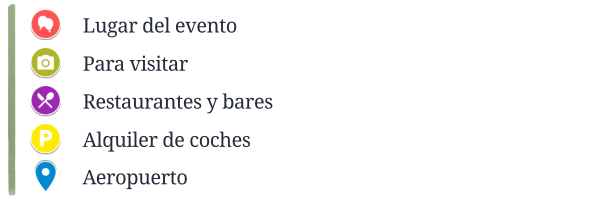
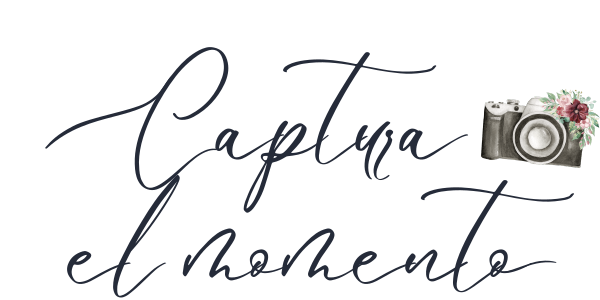
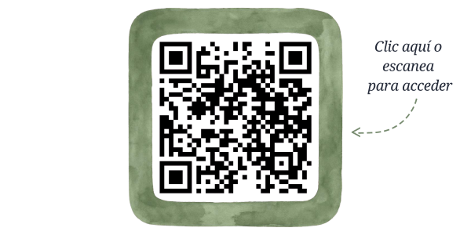
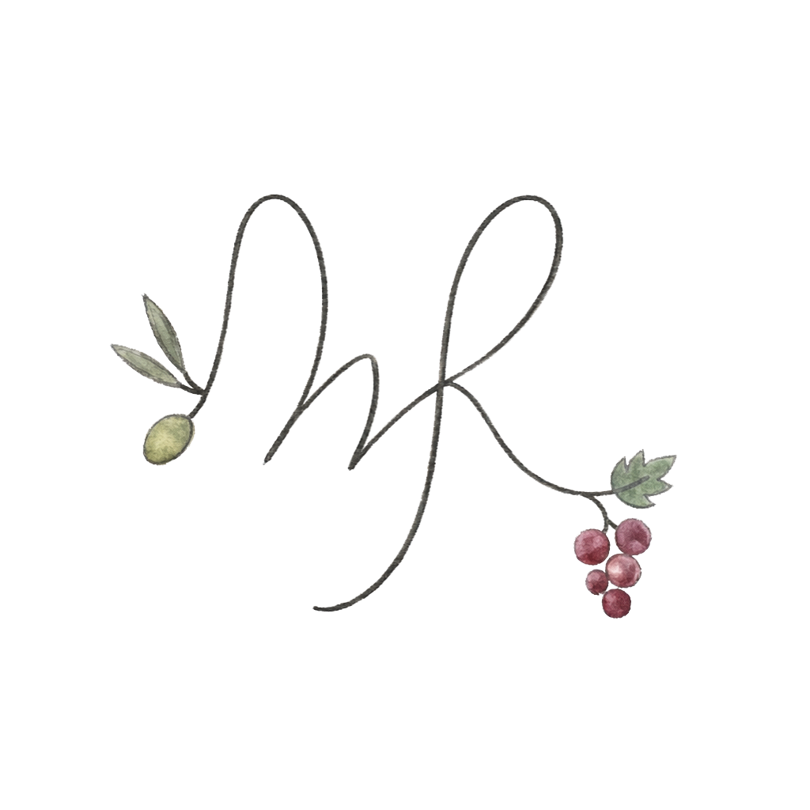

14 Noviembre 2026 · Fuerteventura ·
Entre la tierra del vino con denominación de origen y la del mejor aceite de oliva del mundo hay unos cuantos kilómetros de distancia. Parecía difícil que nuestros caminos se cruzaran, pero acabaron encontrándose en el archipiélago más alejado de España. Allí comenzó una historia que hoy queremos celebrar contigo.
Formas parte de nuestra historia y nos haría
muchísima ilusión compartir este día contigo.


Si vas a descubrir la isla, hemos señalado algunos lugares en el mapa. Para alojamiento: Puerto del Rosario es la opción más económica y cercana (5 minutos). Caleta de Fuste es ideal si buscas más servicios, hoteles y playas, también muy cerca del evento.

Para los más atrevidos: cuidado con las ropas veraniegas, es Fuerteventura, pero no el Caribe. Durante el día la temperatura suele rondar los 20 °C, aunque por la noche una chaqueta ligera puede venir bien. Para los dudosos, confirmamos que no es una boda ibicenca y no hay que asistir de blanco.

Queremos ver la boda a través de tus ojos. Ese día podrás acceder a una aplicación donde dispondrás de 15 fotos para capturar tus momentos favoritos. Todas las imágenes se reunirán en un álbum compartido que podremos descubrir después entre todos. Puedes registrarte desde ahora escaneando o haciendo clic en el QR, pero guarda tus 15 fotos para el gran día... ¡no las gastes antes de tiempo!

Tu compañía en este día tan especial es el mejor regalo que podemos recibir. Pero si además quieres tener un detalle con nosotros, puedes hacerlo aquí:
ES20 2100 3832 1702 0012 3745
Gracias por formar parte de nuestra historia. Que este día sea tan especial para vosotros como lo es para nosotros.
Con amor,
Raquel & Manuel
